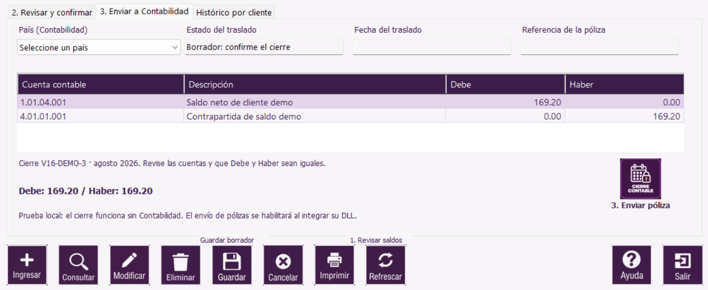

|   |
| |

La captura muestra la partida, el país, Debe, Haber y el botón de envío. Pulse la imagen para ampliarla.
Prueba sin Contabilidad: si la pantalla indica que el enlace se habilitará al integrar la DLL, el botón de envío está desactivado. Puede probar la revisión, confirmación y el reporte, pero el envío real requiere compilar con el enlace de Contabilidad disponible.
Si no hubo movimientos, no existe partida que enviar. Si ya aparece una referencia contable, el traslado terminó y no se debe repetir. Las equivalencias de cuentas de prueba se aplican solo a cierres V16-DEMO.
Pulse Imprimir con esta pestaña abierta. El visor permite imprimir o exportar el reporte de la póliza.
| Botón | Acción |
|---|---|
 | Abre la vista previa del reporte de cierre o de la partida visible. |